- 01 二进制：不了解计算机的源头，你学什么编程.md.html
- 02 余数：原来取余操作本身就是个哈希函数.md.html
- 03 迭代法：不用编程语言的自带函数，你会如何计算平方根？.md.html
- 04 数学归纳法：如何用数学归纳提升代码的运行效率？.md.html
- 05 递归（上）：泛化数学归纳，如何将复杂问题简单化？.md.html
- 06 递归（下）：分而治之，从归并排序到MapReduce.md.html
- 07 排列：如何让计算机学会“田忌赛马”？.md.html
- 08 组合：如何让计算机安排世界杯的赛程？.md.html
- 09 动态规划（上）：如何实现基于编辑距离的查询推荐？.md.html
- 10 动态规划（下）：如何求得状态转移方程并进行编程实现？.md.html
- 11 树的深度优先搜索（上）：如何才能高效率地查字典？.md.html
- 12 树的深度优先搜索（下）：如何才能高效率地查字典？.md.html
- 13 树的广度优先搜索（上）：人际关系的六度理论是真的吗？.md.html
- 14 树的广度优先搜索（下）：为什么双向广度优先搜索的效率更高？.md.html
- 15 从树到图：如何让计算机学会看地图？.md.html
- 16 时间和空间复杂度（上）：优化性能是否只是“纸上谈兵”？.md.html
- 17 时间和空间复杂度（下）：如何使用六个法则进行复杂度分析？.md.html
- 18 总结课：数据结构、编程语句和基础算法体现了哪些数学思想？.md.html
- 19 概率和统计：编程为什么需要概率和统计？.md.html
- 20 概率基础（上）：一篇文章帮你理解随机变量、概率分布和期望值.md.html
- 21 概率基础（下）：联合概率、条件概率和贝叶斯法则，这些概率公式究竟能做什么？.md.html
- 22 朴素贝叶斯：如何让计算机学会自动分类？.md.html
- 23 文本分类：如何区分特定类型的新闻？.md.html
- 24 语言模型：如何使用链式法则和马尔科夫假设简化概率模型？.md.html
- 25 马尔科夫模型：从PageRank到语音识别，背后是什么模型在支撑？.md.html
- 26 信息熵：如何通过几个问题，测出你对应的武侠人物？.md.html
- 27 决策树：信息增益、增益比率和基尼指数的运用.md.html
- 28 熵、信息增益和卡方：如何寻找关键特征？.md.html
- 29 归一化和标准化：各种特征如何综合才是最合理的？.md.html
- 30 统计意义（上）：如何通过显著性检验，判断你的A_B测试结果是不是巧合？.md.html
- 31 统计意义（下）：如何通过显著性检验，判断你的A_B测试结果是不是巧合？.md.html
- 32 概率统计篇答疑和总结：为什么会有欠拟合和过拟合？.md.html
- 33 线性代数：线性代数到底都讲了些什么？.md.html
- 34 向量空间模型：如何让计算机理解现实事物之间的关系？.md.html
- 35 文本检索：如何让计算机处理自然语言？.md.html
- 36 文本聚类：如何过滤冗余的新闻？.md.html
- 37 矩阵（上）：如何使用矩阵操作进行PageRank计算？.md.html
- 38 矩阵（下）：如何使用矩阵操作进行协同过滤推荐？.md.html
- 39 线性回归（上）：如何使用高斯消元求解线性方程组？.md.html
- 40 线性回归（中）：如何使用最小二乘法进行直线拟合？.md.html
- 41 线性回归（下）：如何使用最小二乘法进行效果验证？.md.html
- 42 PCA主成分分析（上）：如何利用协方差矩阵来降维？.md.html
- 43 PCA主成分分析（下）：为什么要计算协方差矩阵的特征值和特征向量？.md.html
- 44 奇异值分解：如何挖掘潜在的语义关系？.md.html
- 45 线性代数篇答疑和总结：矩阵乘法的几何意义是什么？.md.html
- 46 缓存系统：如何通过哈希表和队列实现高效访问？.md.html
- 47 搜索引擎（上）：如何通过倒排索引和向量空间模型，打造一个简单的搜索引擎？.md.html
- 48 搜索引擎（下）：如何通过查询的分类，让电商平台的搜索结果更相关？.md.html
- 49 推荐系统（上）：如何实现基于相似度的协同过滤？.md.html
- 50 推荐系统（下）：如何通过SVD分析用户和物品的矩阵？.md.html
- 51 综合应用篇答疑和总结：如何进行个性化用户画像的设计？.md.html
- 导读：程序员应该怎么学数学？.md.html
- 开篇词 作为程序员，为什么你应该学好数学？.md.html
- 数学专栏课外加餐（一） 我们为什么需要反码和补码？.md.html
- 数学专栏课外加餐（三）：程序员需要读哪些数学书？.md.html
- 数学专栏课外加餐（二） 位操作的三个应用实例.md.html
- 结束语 从数学到编程，本身就是一个很长的链条.md.html
- 捐赠
38 矩阵（下）：如何使用矩阵操作进行协同过滤推荐？
你好，我是黄申。今天我们来聊聊矩阵操作和推荐算法的关系。
我这里说的推荐，是指为用户提供可靠的建议、并协助用户挑选物品的一种技术。一个好的推荐系统需要建立在海量数据挖掘基础之上，并根据用户所处的情景和兴趣特点，向用户推荐可能感兴趣的信息和商品。
协同过滤（Collaborative Filtering）是经典的推荐算法之一，它充分利用了用户和物品之间已知的关系，为用户提供新的推荐内容。我会从这种二元关系出发，给你讲讲如何使用矩阵计算，来实现协同过滤推荐算法。
用矩阵实现推荐系统的核心思想
矩阵中的二维关系，除了可以表达图的邻接关系，还可以表达推荐系统中用户和物品的关系。如果你不懂推荐系统，不用急，我这里先给你简单讲讲它的核心思想。
简单地理解就是，推荐系统会根据用户所处的场景和个人喜好，推荐他们可能感兴趣的信息和商品。比如，你在阅读一部电影的影评时，系统给你推荐了其他“你可能也感兴趣的电影”。可以看出来，推荐系统中至少有2个重要的角色：用户和物品。用户是系统的使用者，物品就是将要被推荐的候选对象。
例如，亚马逊网站的顾客就是用户，网站所销售的商品就是物品。需要注意的是，除了用户角色都是现实中的自然人，某些场景下被推荐的物品可能也是现实中的自然人。例如，一个招聘网站会给企业雇主推荐合适的人才，这时候应聘者承担的是物品角色。
而一个好的推荐算法，需要充分挖掘用户和物品之间的关系。我们可以通过矩阵来表示这种二元关系。我这里有一个例子，我们用矩阵\(X\)来表示用户对物品喜好程度。
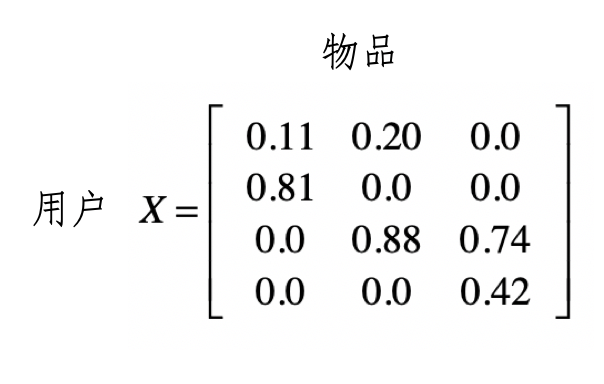
其中第\(i\)行是第\(i\)个用户的数据，而第j列是用户对第j个物品的喜好程度。我们用\(x\_{i,j}\)表示这个数值。这里的喜好程度可以是用户购买商品的次数、对书籍的评分等等。
假设我们用一个0到1之间的小数表示。有了这种矩阵，我们就可以通过矩阵的操作，充分挖掘用户和物品之间的关系。下面，我会使用经典的协同过滤算法，来讲解矩阵在其中的运用。
在此之前，我们先来看什么是协同过滤。你可以把它理解为最直观的“口口相传”。假设我们愿意接受他人的建议，尤其是很多人都向你建议的时候。其主要思路就是利用已有用户群过去的行为或意见，预测当前用户最可能喜欢哪些东西。根据推荐依据和传播的路径，又可以进一步细分为基于用户的过滤和基于物品的过滤。
基于用户的过滤
首先，我们来看基于用户的协同过滤。它是指给定一个用户访问（我们假设有访问就表示有兴趣）物品的数据集合，找出和当前用户历史行为有相似偏好的其他用户，将这些用户组成“近邻”，对于当前用户没有访问过的物品，利用其近邻的访问记录来预测。我画了一张图方便你理解。
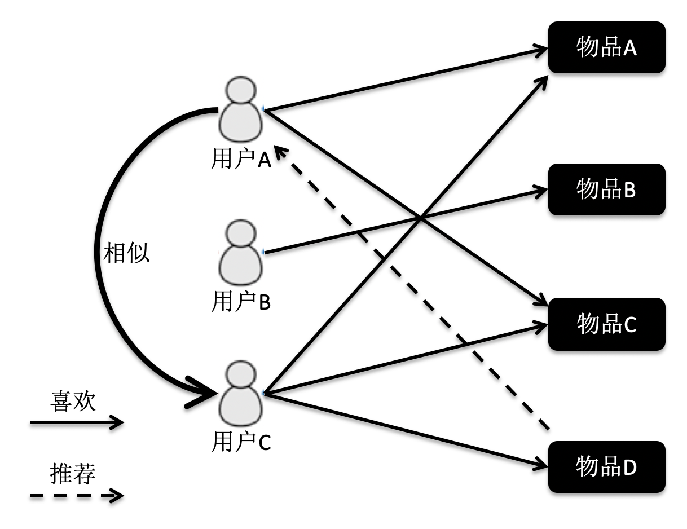
根据这张图的访问关系来看，用户A访问了物品A和C，用户B访问了物品B，用户C访问了物品A，C和D。我们计算出来，用户C是A的近邻，而B不是。因此系统会更多地向用户A推荐用户C访问的物品D。
理解了这个算法的基本概念，我们来看看如何使用公式来表述它。假设有m个用户，n个物品，那么我们就能使用一个m×n维的矩阵\(X\)来表示用户对物品喜好的二元关系。基于这个二元关系，我们可以列出下面这两个公式：
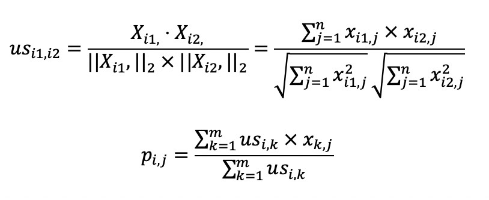
其中，第一个公式比较容易理解，它的核心思想是计算用户和用户之间的相似度。完成了这一步我们就能找到给定用户的“近邻”。
我们可以使用向量空间模型中的距离或者是夹角余弦来处理，在这里我使用了夹角余弦，其中\(us\_{i1}\),\(i2\)表示用户\(i1\)和\(i2\)的相似度，而\(X\_{i1}\),表示矩阵中第\(i1\)行的行向量，\(X\_{i2}\),表示矩阵中第\(i2\)行的行向量。分子是两个表示用户的行向量之点乘，而分母是这两个行向量\(L2\)范数的乘积。
第二个公式利用第一个公式所计算的用户间相似度，以及用户对物品的喜好度，预测任一个用户对任一个物品的喜好度。其中\(p\_{i,j}\)表示第\(i\)用户对第\(j\)个物品的喜好度，\(us\_{i,k}\)表示用户\(i\)和\(k\)之间的相似度，\(x\_{k,j}\)表示用户\(k\)对物品\(j\)的喜好度。注意这里最终需要除以\(Σus\_{i,k}\)，是为了进行归一化。
从这个公式可以看出，如果\(us\_{i,k}\)越大，\(x\_{k,j}\)对最终\(p\_{i,j}\)的影响越大，反之如果\(us\_{i,k}\)越小，\(x\_{k,j}\)对最终\(p\_{i,j}\)的影响越小，充分体现了“基于相似用户”的推荐。
如果你无法理解如何把这两个公式对应为矩阵操作，没关系，我下面会通过之前介绍的喜好度矩阵\(X\)的示例，把这两个公式逐步拆解，并对应到矩阵上的操作，你一看就能明白了。
首先，我们来看第一个关于夹角余弦的公式。
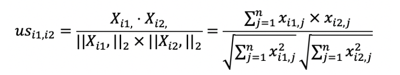
在介绍向量空间模型的时候，我提到夹角余弦可以通过向量的点乘来实现。这对矩阵同样适用，我们可以采用矩阵点乘自身的转置来实现，也就是\(XX’\)。矩阵\(X\)的每一行是某个用户的行向量，每个分量表示用户对某个物品的喜好程度。而矩阵\(X’\)的每一列是某个用户的列向量，每个分量表示用户对某个物品的喜好程度。
我们假设\(XX’\)的结果为矩阵\(Y\)，那么\(y\_{i,j}\)就表示用户\(i\)和用户\(j\)这两者喜好度向量的点乘结果，它就是夹角余弦公式中的分子。如果\(i\)等于\(j\)，那么这个计算值也是夹角余弦公式分母的一部分。从矩阵的角度来看，\(Y\)中任何一个元素都可能用于夹角余弦公式的分子，而对角线上的值会用于夹角余弦公式的分母。这里我们仍然使用之前的喜好度矩阵示例，来计算矩阵\(Y\)和矩阵\(US\)。
首先我们来看\(Y\)的计算。
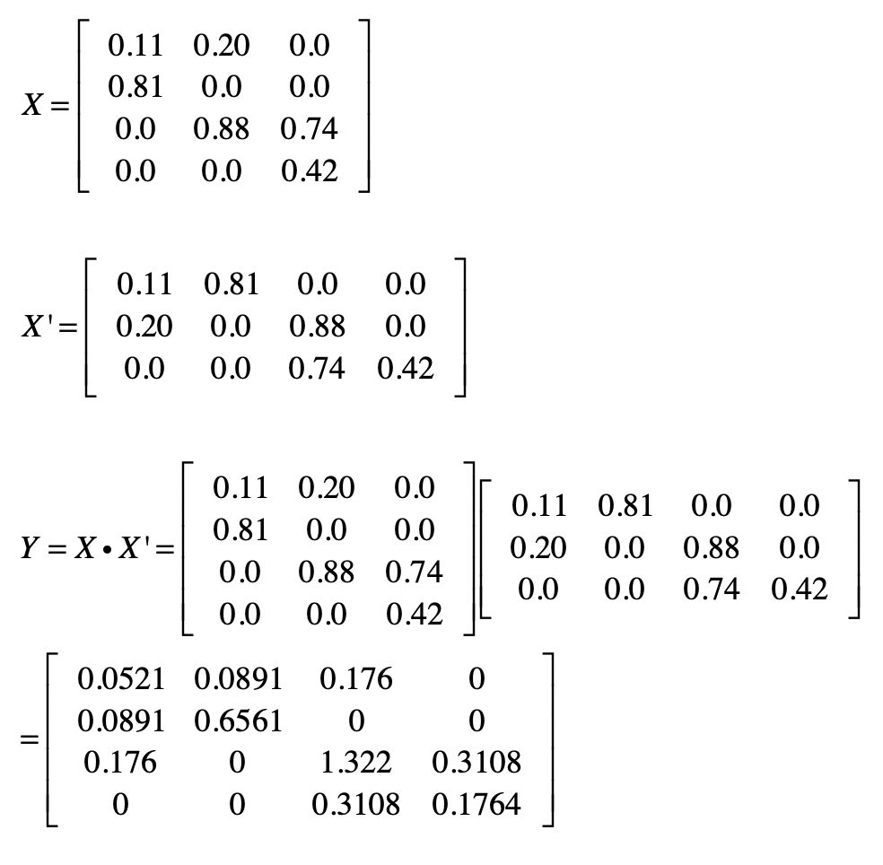
然后我们使用\(Y\)来计算\(US\)。我用下面这张图表示矩阵中的元素和夹角余弦计算的对应关系。
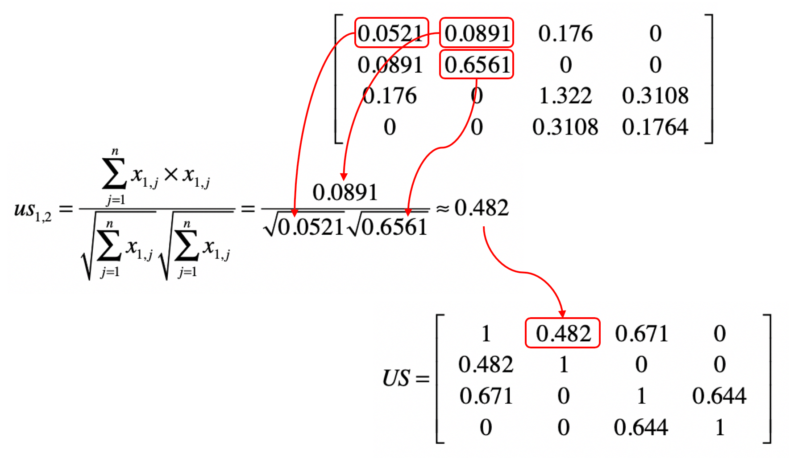
明白了上面这个对应关系，我们就可以利用矩阵\(Y\)，获得任意两个用户之间的相似度，并得到一个m×m维的相似度矩阵\(US\)。矩阵\(US\)中\(us\_{i,j}\)的取值为第\(i\)个用户与第\(j\)个用户的相似度。这个矩阵是一个沿对角线对称的矩阵。根据夹角余弦的定义，\(us\_{i,j}\)和\(us\_{j,i}\)是相等的。通过示例的矩阵\(Y\)，我们可以计算矩阵\(US\)。我把相应的结果列在了下方。
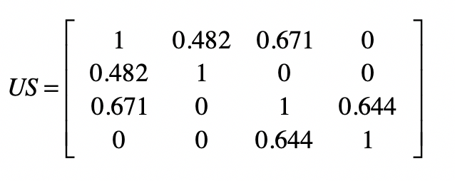
接下来，我们再来看第二个公式。
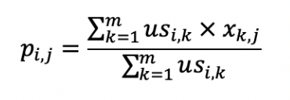
从矩阵的角度来看，现在我们已经得到用户相似度矩阵\(US\)，再加上用户对物品的喜好度矩阵\(X\)，现在需要计算任意用户对任意物品的喜好度推荐矩阵\(P\)。
为了实现上面这个公式的分子部分，我们可以使用\(US\)和\(X\)的点乘。我们假设点乘后的结果矩阵为\(USP\)。这里我列出了根据示例计算得到的矩阵\(USP\)。
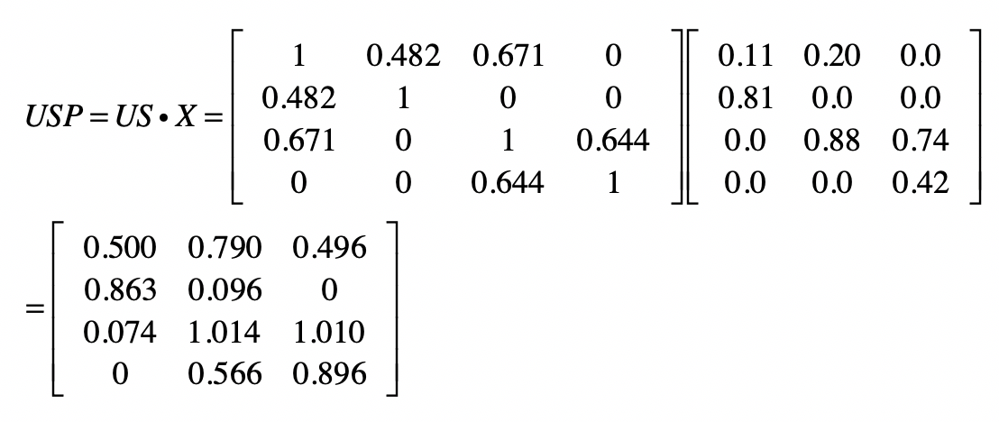
分母部分可以使用\(US\)矩阵的按行求和来实现。我们假设按行求和的矩阵为\(USR\)。根据示例计算就可以得到\(USR\)。
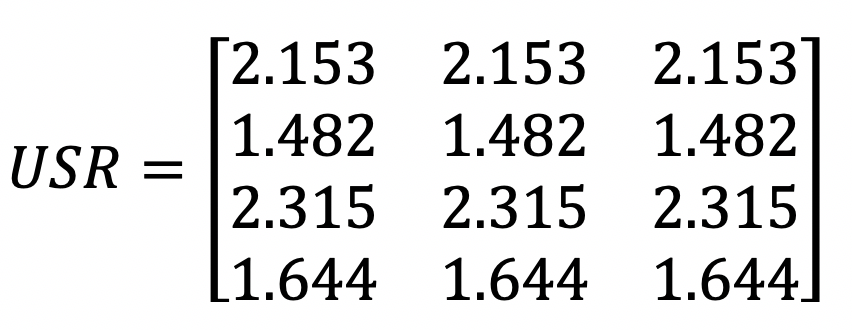
最终，我们使用\(USP\)和*\(USR\)的元素对应除法，就可以求得矩阵\(P\)。
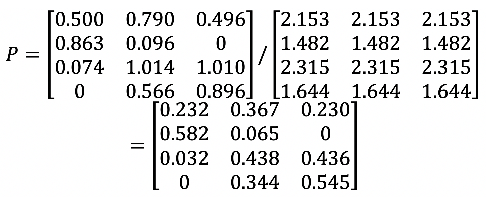
既然已经有\(X\)这个喜好度矩阵了，为什么还要计算\(P\)这个喜好度矩阵呢？实际上，\(X\)是已知的、有限的喜好度。例如用户已经看过的、购买过的、或评过分的物品。而\(P\)是我们使用推荐算法预测出来的喜好度。
即使一个用户对某个物品从未看过、买过、或评过分，我们依然可以通过矩阵\(P\)，知道这位用户对这个物品大致的喜好程度，从而根据这个预估的分数进行物品的推荐，这也是协同过滤的基本思想。从根据示例计算的结果也可以看出这点，在原始矩阵\(X\)中第1个用户对第3个物品的喜好度为0。可是在最终的喜好度推荐矩阵P中，第1个用户对第3个物品的喜好度为0.278，已经明显大于0了，因此我们就可以把物品3推荐给用户1。
上面这种基于用户的协同过滤有个问题，那就是没有考虑到用户的喜好程度是不是具有可比性。假设用户的喜好是根据对商品的评分来决定的，有些用户比较宽容，给所有的商品都打了很高的分，而有些用户比较严苛，给所有商品的打分都很低。分数没有可比性，这就会影响相似用户查找的效果，最终影响推荐结果。这个时候我们可以采用之前介绍的特征值变化，对于原始的喜好度矩阵，按照用户的维度对用户所有的喜好度进行归一化或者标准化处理，然后再进行基于用户的协同过滤。
基于物品的过滤
基于物品的协同过滤是指利用物品相似度，而不是用户间的相似度来计算预测值。我同样用图来帮助你理解。
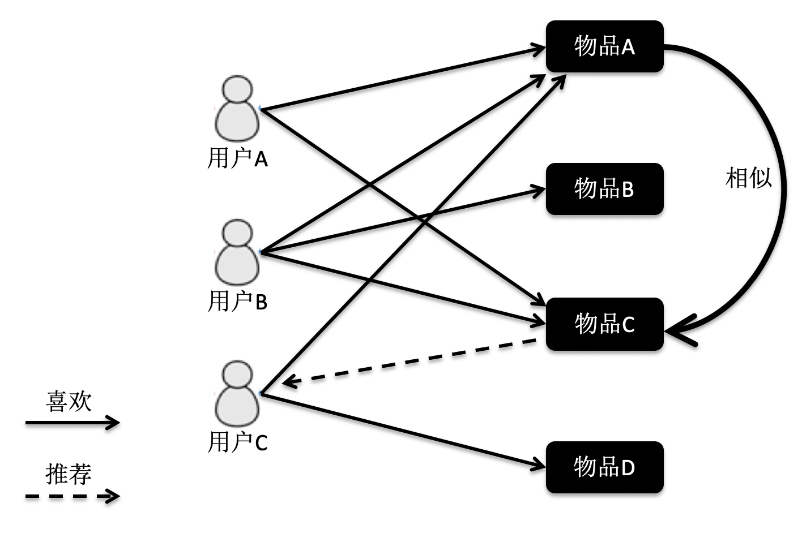
在这张图中，物品A和C因为都被用户A和B同时访问，因此它们被认为相似度更高。当用户C访问过物品A后，系统会更多地向用户推荐物品C，而不是其他物品。
基于物品的协同过滤同样有两个公式，你可以看一下。
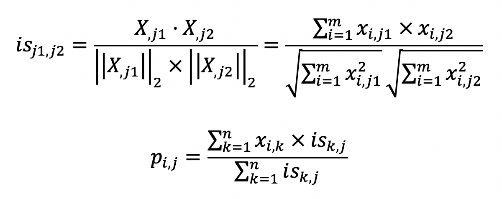
如果你弄明白了基于用户的过滤，那么这两个公式也就不难理解了。第一个公式的核心思想是计算物品和物品之间的相似度，在这里我仍然使用夹角余弦。其中\(is\_{j1}\),\(j2\)表示物品\(j1\)和\(j2\)的相似度，而\(X\_{j1}\)表示了\(X\)中第\(j1\)列的列向量，而\(X\_{j2}\)表示了\(X\)中第\(j2\)列的列向量。分子是两个表示物品的列向量之点乘，而分母是这两个列向量\(L2\)范数的乘积。
第二个公式利用第一个公式所计算的物品间相似度，和用户对物品的喜好度，预测任一个用户对任一个物品的喜好度。其中\(p\_{i,j}\)表示第\(i\)用户对第\(j\)个物品的喜好度，\(x\_{i,k}\)表示用户\(i\)对物品\(k\)的喜好度，\(is\_{k,j}\)表示物品\(k\)和\(j\)之间的相似度，注意这里除以\(Σis\_{k,j}\)是为了进行归一化。从这个公式可以看出，如果\(is\_{k,j}\)越大，\(x\_{i,k}\)对最终\(p\_{i,j}\)的影响越大，反之如果\(is\_{k,j}\)越小，\(x\_{i,k}\)对最终\(p\_{i,j}\)的影响越小，充分体现了“基于相似物品”的推荐。
类似地，用户喜好程度的不一致性，同样会影响相似物品查找的效果，并最终影响推荐结果。我们也需要对于原始的喜好度矩阵，按照用户的维度对用户的所有喜好度，进行归一化或者标准化处理。
总结
今天我首先简要地介绍了推荐系统的概念和主要思想。为了给用户提供可靠的结果，推荐系统需要充分挖掘历史数据中，用户和物品之间的关系。协同过滤的推荐算法就很好地体现了这一点。
一旦涉及用户和物品的这种二元关系，矩阵就有用武之地了。我通过矩阵来表示用户和物品的关系，并通过矩阵计算来获得协同过滤的结果。协同过滤分为基于用户的过滤和基于物品的过滤两种，它们的核心思想都是相同的，因此矩阵操作也是类似的。在这两个应用场景下，矩阵点乘体现了多个用户或者物品之间的相似程度，以及聚集后的相似程度所导致的最终推荐结果。
当然，基于用户和物品间关系的推荐算法有很多，对矩阵的操作也远远不止点乘、按行求和、元素对应乘除法。我后面会介绍如何使用矩阵的主成分分析或奇异值分解，来进行物品的推荐。
思考题
我在介绍推荐算法时，提到了基于物品的协同过滤。请参照基于用户的协同过滤，写出相应的矩阵操作步骤。
欢迎留言和我分享，也欢迎你在留言区写下今天的学习笔记。你可以点击“请朋友读”，把今天的内容分享给你的好友，和他一起精进。
© 2019 - 2023 Liangliang Lee. Powered by gin and hexo-theme-book.